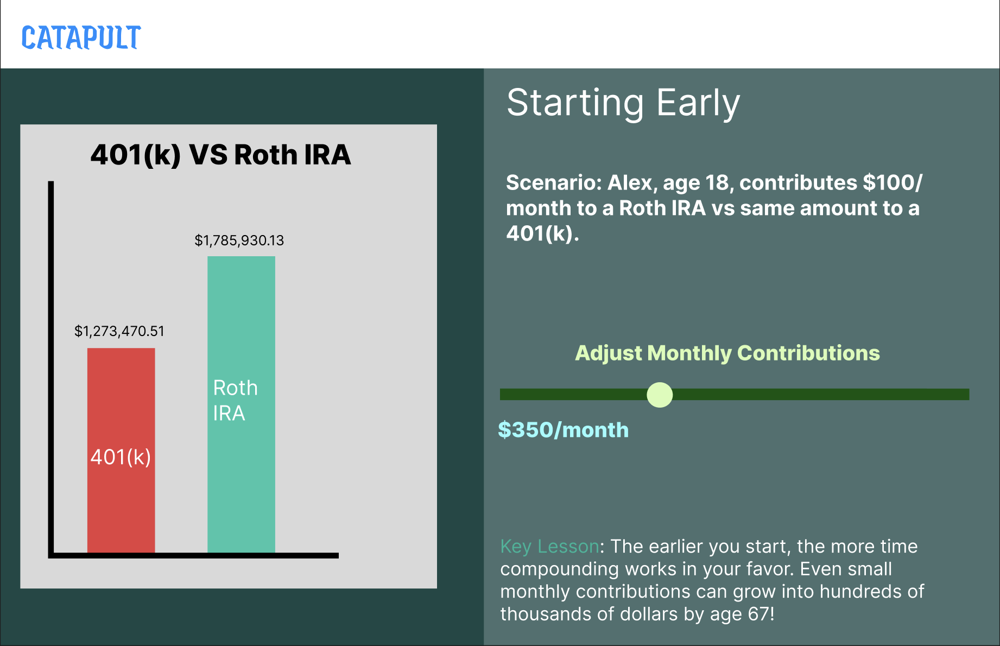

Limited investment choices (based on employer plan)
Money locked until retirement (penalties for early withdrawal)
Interactive: Drag pros/cons into the correct column.
What is a Roth IRA?
A Roth IRA is an individual retirement account you open yourself. You pay taxes now, but future withdrawals are tax-free.
Pros
Tax-free growth and withdrawals
Flexible investment choices
No required withdrawals (RMDs)
Cons
Lower contribution limits than 401(k)
Income restrictions (not everyone can contribute)
Interactive: Match the pro/con cards to Roth IRA vs 401(k).
Side-by-Side — Roth IRA vs 401(k)
Comparison of 401(k) and Roth IRA features
Feature
401(k)
Roth IRA
When taxed
Later (traditional)
Now (withdrawals tax-free)
Contribution limits (2024)
$23,000+
$7,000
Provider
Employer
You open it yourself
Interactive: Click which plan you'd start first if you had both options.
Roth IRA vs 401(k) — Comparison Video
Interactive: Roth IRA vs 401k video.
Timeline — Starting Early
Scenario: Alex, age 18, contributes $100/month to a Roth IRA vs same amount to a 401(k).
Interactive: Move the slider to adjust monthly savings and see how the balance grows by age 67.

Life Happens (Age 25–40)
By now, Alex has a family and needs protection. Enter: Life Insurance.
Life insurance pays money to your loved ones when you pass away.
Types of Life Insurance
Term Life: Cheapest, lasts 10–30 years, no cash value.
Whole Life: More expensive, lasts your whole life, builds cash value.
Universal Life: Flexible payments, may grow cash value.
Variable Life: Investment-linked, higher risk.
Interactive: Click each type to reveal pros/cons and an example.
There needs to be pro's and con's for each one. When the element is clicked it needs to trigger a dropdown.
Types of Life Insurance
Interactive: Have a two question quiz on the video
Which Insurance at Which Age?
• At 22 with no dependents, should Alex buy life insurance? (Optional, but cheaper now).
• At 30 with a family, which policy is most affordable? (Term).
• At 50+, which policy is common? (Whole/Universal).
Putting It Together
Two Alex timelines at Age 67:
Alex who invested early (Roth/401k) + had life insurance: Secure retirement, protected family.
Alex who delayed both: Lower retirement savings, no insurance coverage.
Interactive element will go here
Quiz & Reflection
Which plan has higher contribution limits: Roth IRA or 401k?
Which insurance type is cheapest for young adults?
When do Roth IRA withdrawals become tax-free?
Reflection: What's one financial goal you want to start today?
 Tax advantages (traditional = pay tax later, Roth = tax-free withdrawals)
Tax advantages (traditional = pay tax later, Roth = tax-free withdrawals)